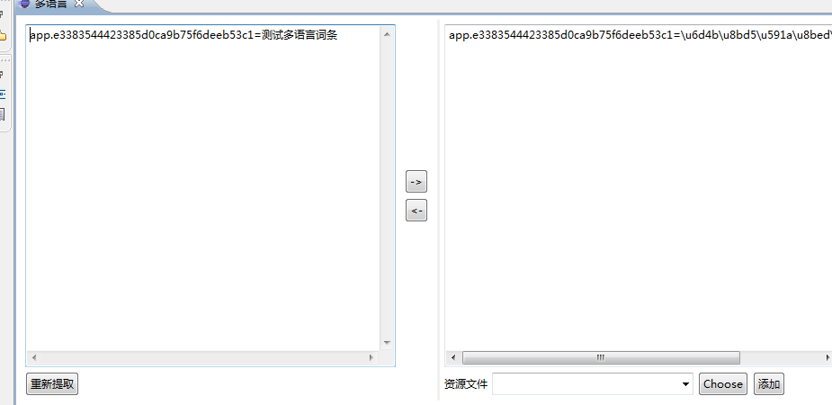
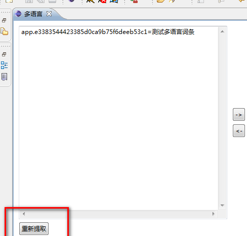
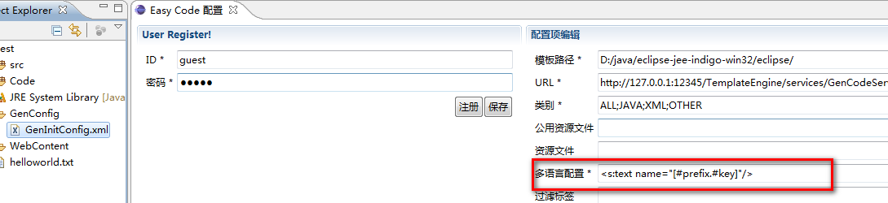

1、词条提取
将要提取词条的jsp文件用多语言编辑器打开(选中jsp文件->右键->打开方式->多语言),
用鼠标选中一段需要提取的词条，然后按ALT+Q快捷键盘，即完成了词条的提取。
详情见下图

2、词条编码
在Tools标签页中即可看到提取的词条，点击装货按钮即可完成编码转换

3、将词条加添加到资源文件中。
选中一个资源文件，然后点添加按钮，即将资源文件自动追加到选定的资源文件里去。 资源文件追加时会自动判断资源文件里是否已经存在相同的key值，如果已经存在，则不会重复添加。

4、重复提取按钮
重复提取规则是，多语言工具将整个jsp文本内容都扫描一次，将已经存在的标签都提取出来。

5、标签模板，上面截图中提炼的标签是按struts2标签来提取的，模板可以自己设置，见下。
